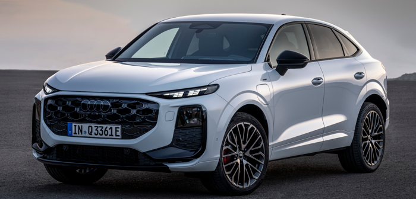

Audi
Audi Q3
أصغر سيارة SUV فاخرة من Audi بتصميم عصري وتقنيات متطورة.
أصغر سيارة SUV فاخرة من Audi بتصميم عصري وتقنيات متطورة.

| المحرك | 1.5 لتر تيربو |
| عدد الأسطوانات | 4 |
| القوة | 150 حصان |
| عزم الدوران | 250 نيوتن متر |
| ناقل الحركة | 7 سرعات S tronic |
| نظام الدفع | أمامي |
| التسارع (0-100) | 9.2 ثانية |
| السرعة القصوى | 207 كم/س |
| عدد المقاعد | 5 |
| نوع الوقود | بنزين |